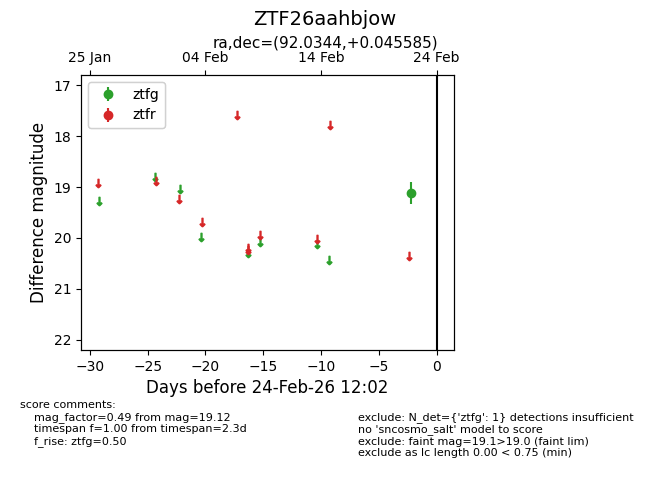
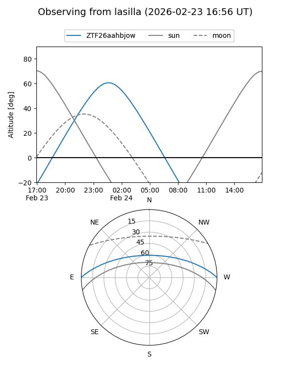
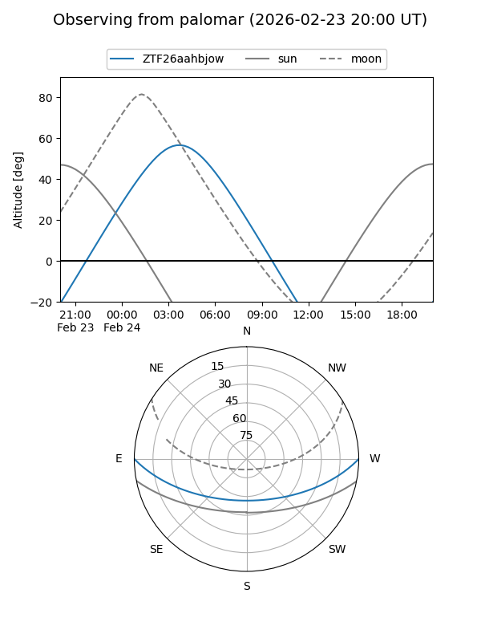

ZTF26aahbjow
Target ZTF26aahbjow at 2026-02-24 12:03
Aliases and brokers:
FINK: link
Lasair: link
ALeRCE: link
alt names
ZTF26aahbjow (ztf,fink_ztf)
Coordinates:
equatorial (ra, dec) = 92.0344,+0.04559
equatorial (HMS+DMS) = 06:08:08.27,+00:02:44.11
galactic (l, b) = (207.9079,-9.60102)
Flags:
Photometry:
last ztfg=19.12
1 ztfg detections
Lightcurve

Visibility


Additional plots